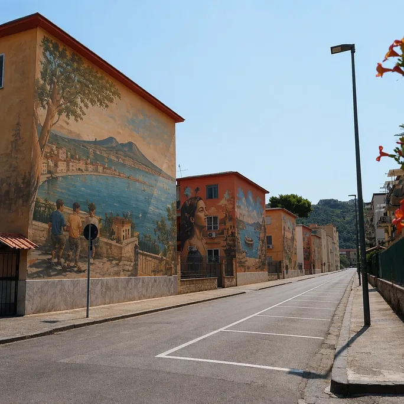
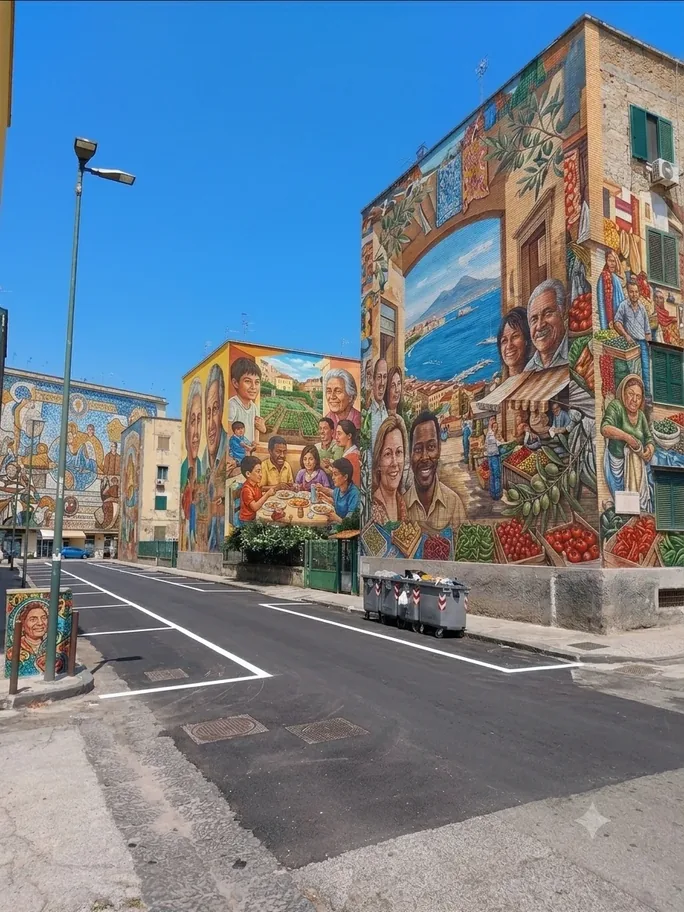
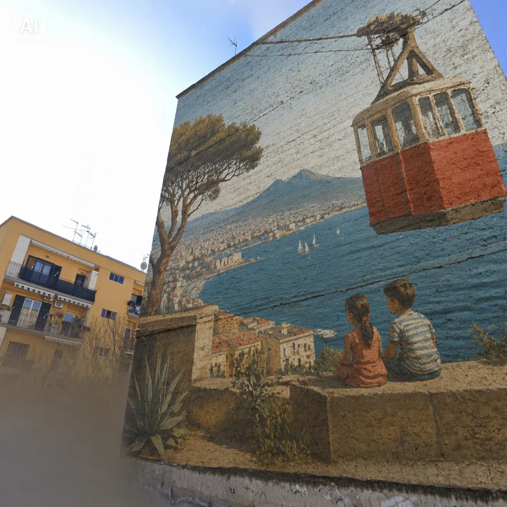
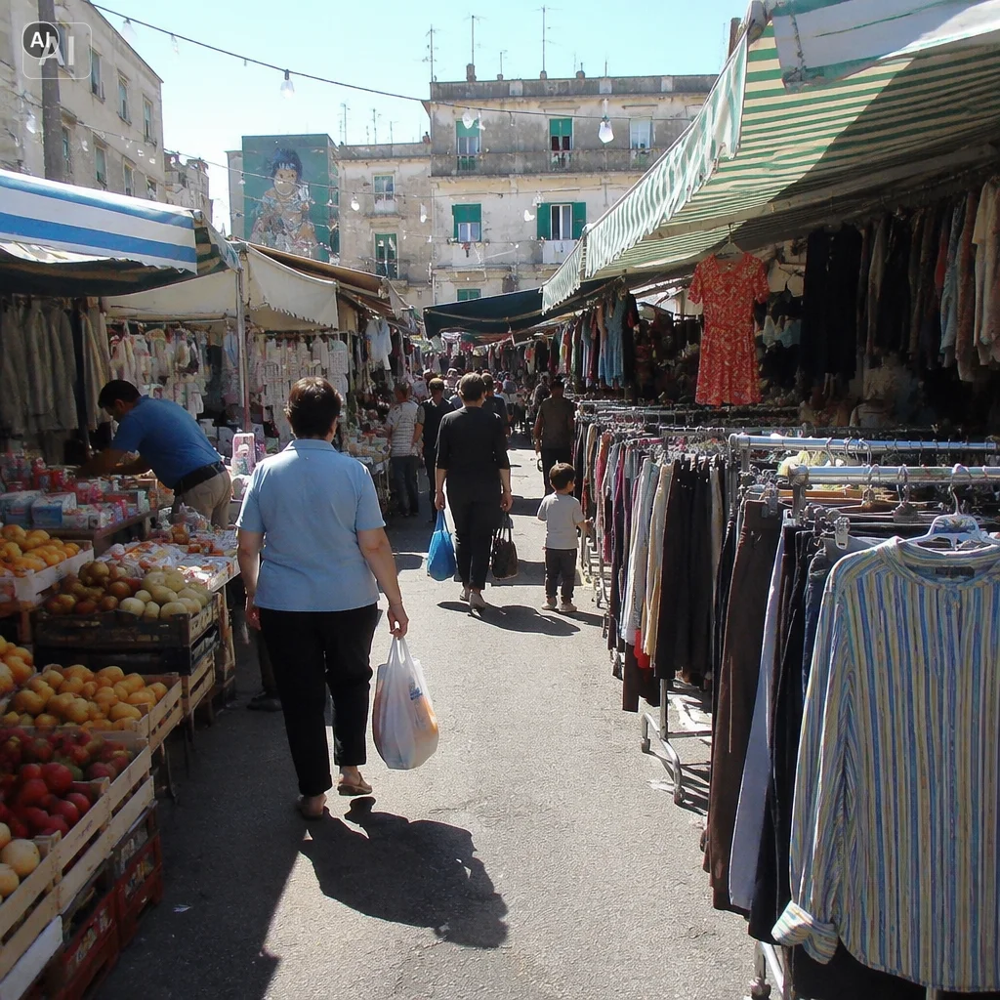
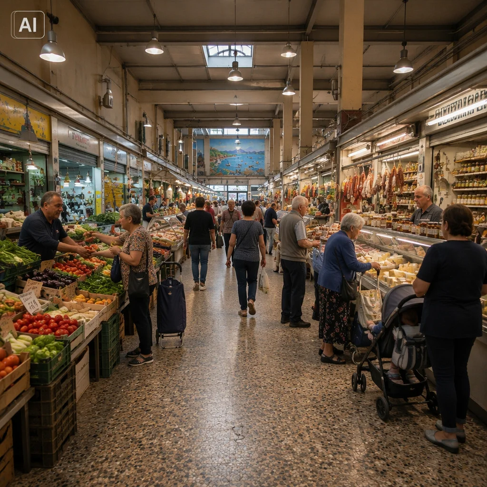
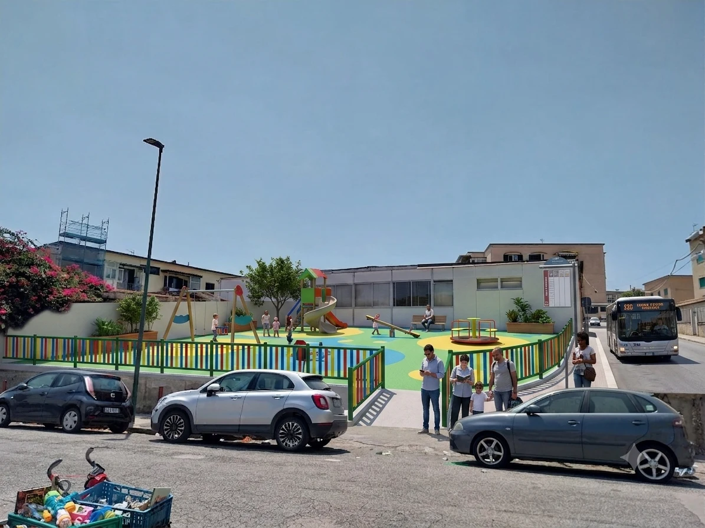
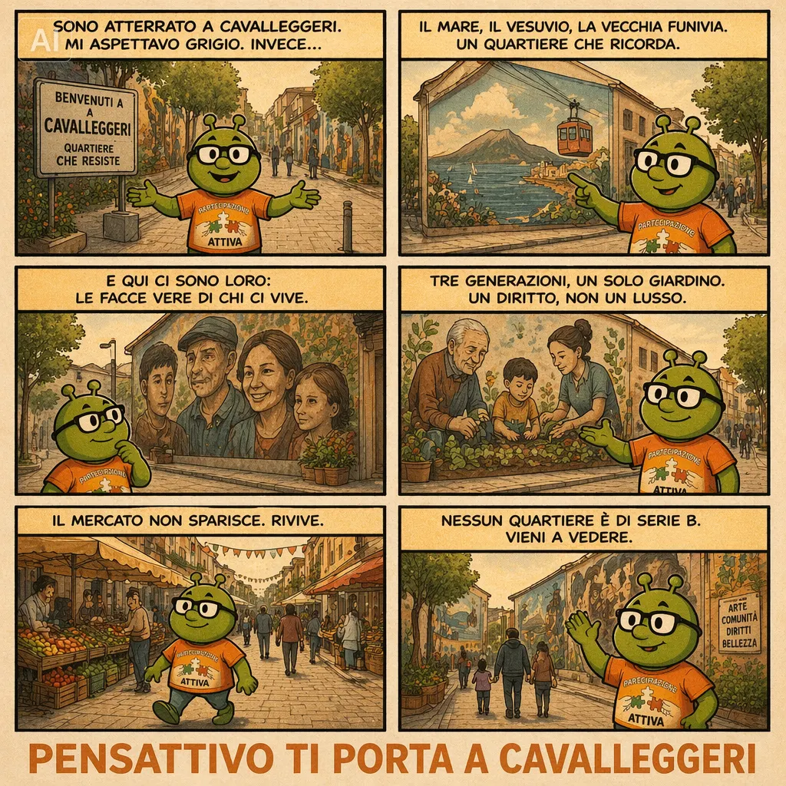

Da un’idea del dott. Antonio Cristiano, presidente dell’Associazione Mercatari ed esponente di Partecipazione Attiva a Napoli.
Il Movimento popolare di Partecipazione Attiva propone alle Istituzioni di Napoli e della Campania la seguente proposta di riqualificazione del territorio, con il recupero della propria identità e la promozione di una rinnovata crescita commerciale in un settore in via di estinzione come il commercio a conduzione familiare.
Il rione di Cavalleggeri d’Aosta di Napoli–Fuorigrotta può diventare una mostra a cielo aperto che racconta la sua storia. Con l’America’s Cup alle porte, il momento è adesso.
Partecipazione Attiva propone al Comune di Napoli e alla Municipalità 10, dando seguito al suo esponente su Napoli Antonio Cristiano, un progetto di rigenerazione urbana attraverso l’arte: trasformare Via Marco Polo e il Rione Cavalleggeri d’Aosta in un percorso di murales che racconti l’identità del Rione, ne rafforzi il decoro e la sicurezza percepita e lo colleghi idealmente al waterfront dell’adiacente Bagnoli.
Perché proprio qui
Cavalleggeri d’Aosta è tra le zone della città meglio servite dai mezzi di trasporto pubblico. Efficienti mezzi su ruote intervengono tempestivamente a sopperire le eventuali interruzioni, per qualsiasi motivo, delle linee ferrate (linea 2 della Metropolitana di superficie e linea Cumana). La zona vede anche un’alta concentrazione di scuole fino a livello universitario ed attività varie di prossimità. Un intervento sull’immagine e sull’organizzazione della vita del Rione avrebbe una ricaduta tangibile, non confinata ad un pubblico di soli residenti. Il Rione ha inoltre un patrimonio identitario da raccontare, dalla memoria dell’edilizia popolare ai segni della dismessa funivia Fuorigrotta–Posillipo.

Perché proprio queste case
Non un muro a caso: nel sopralluogo lungo la strada sono state individuate le prime cinque facciate su cui sarebbe possibile realizzare i primi murales — il resto delle facciate dei palazzi della zona, mercatino compreso, resta comunque disponibile per le fasi successive del percorso. Ogni parete andrà scelta e raccontata con un criterio preciso, non riempita a caso: il legame con la memoria del quartiere (il mare, il Vesuvio, la vecchia funivia Fuorigrotta–Posillipo), con chi lo abita oggi, o con la cura dello spazio comune vicino al mercato.
L’occasione: America’s Cup 2027
Nel 2027 il Golfo di Napoli ospiterà l’evento finale della 38ª edizione della prestigiosa America’s Cup, con le basi dei team a Bagnoli, adiacente a Cavalleggeri d’Aosta che è la naturale soglia di accesso tra le fermate dei mezzi pubblici e il waterfront: la realizzazione, in tutto o in parte, dei murales e delle opere ipotizzate nel progetto estenderebbe i benefici dell’evento anche a un Rione che, come tanti, resta spesso escluso dalle ricadute dirette dei grandi eventi.

Non solo estetica: una leva economica e di servizio
I murales e gli altri interventi potranno valorizzare anche la vita economica del Rione. Il mercato di Via Marco Polo potrebbe rinascere e tornare a essere commercio popolare vivo e servizio di prossimità per le famiglie, diventando una tappa del percorso rionale, non un elemento da nascondere per accompagnarlo alla morte.

Uno spazio per i più piccoli
Lungo il percorso, tra le facciate individuate per i murales, si trova anche un edificio dismesso e recintato. Un’occasione per restituire al Rione uno spazio di aggregazione per i bambini: un’area giochi curata, insieme a un parcheggio e a una fermata degli autobus oggi assenti in quel tratto di strada.

